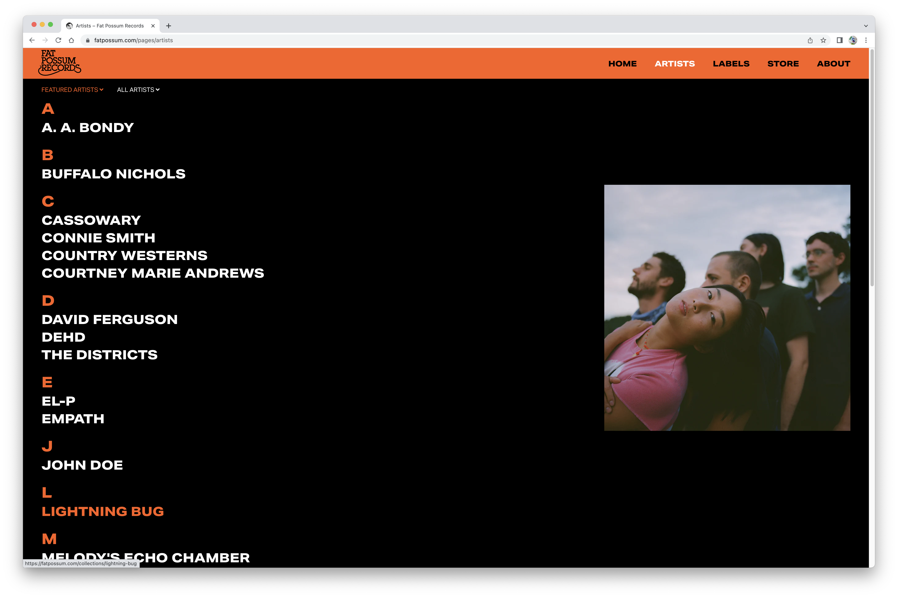
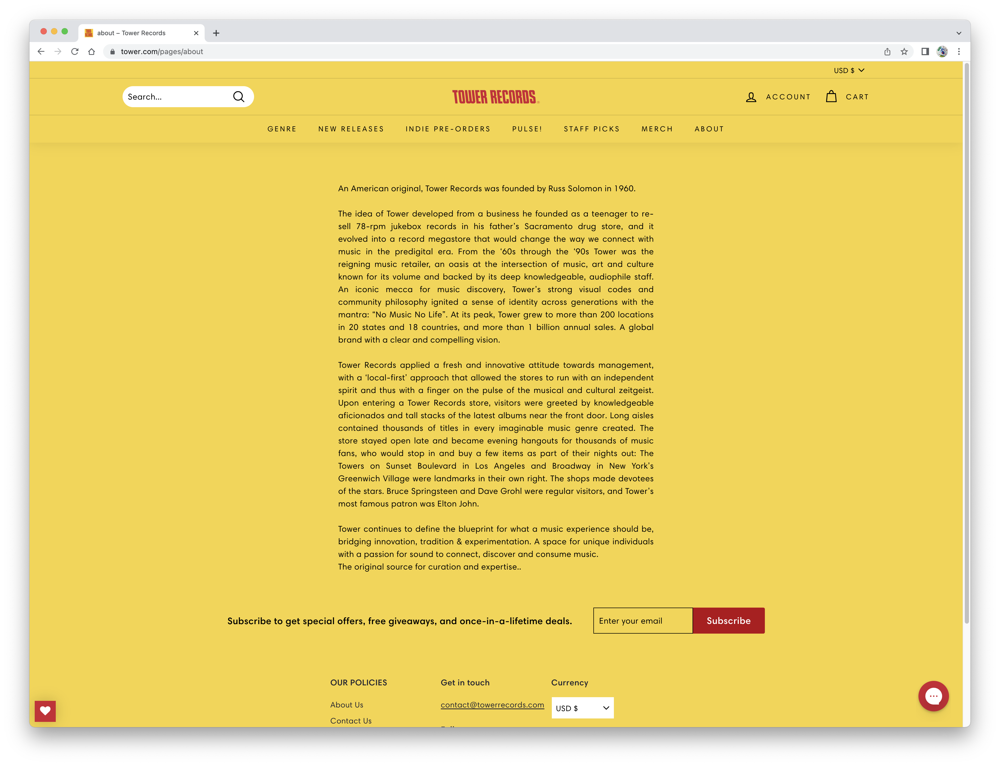
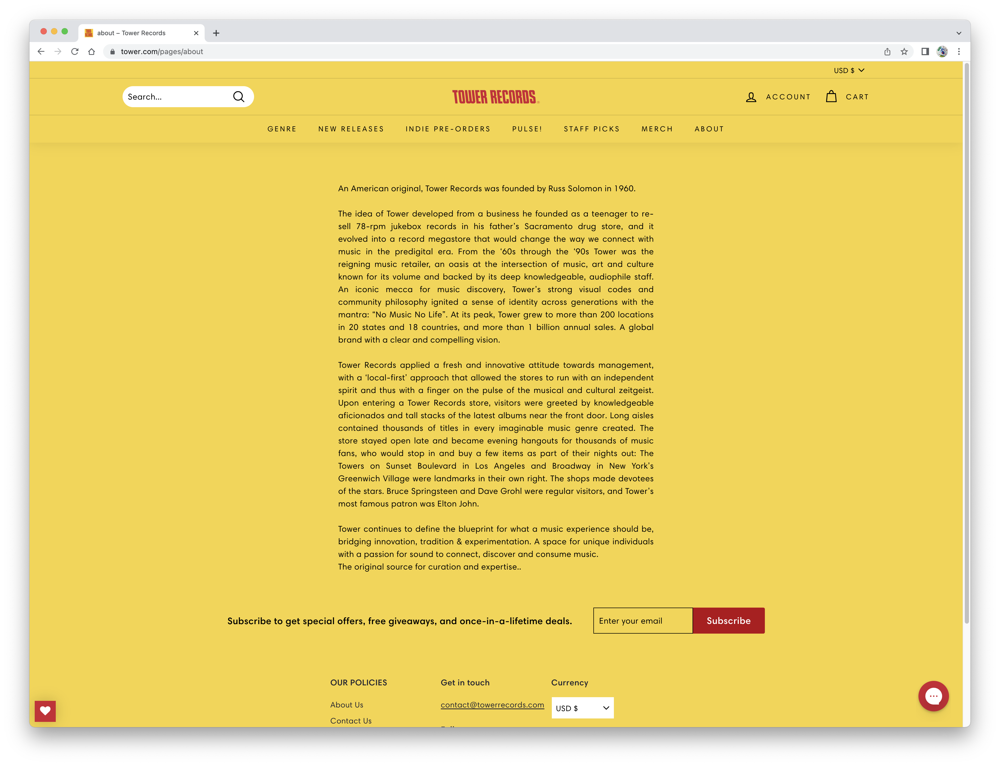

Final project proposal
Introduction
The CD Stack
Inspired by the cases scattered about the desk of my mother, the hoards of discs bulging from any free space my highschool car had to offer, and the endless collection of liner notes that make up the decorations of my home, The CD Stack is meant to represent nostalgia; of finally finding the artist of that song you heard on the radio weeks ago, of coming across your favorite album from the first band you saw live, of picking up an EP on a whim and having it end up altering the trajectory of your musical endeavors forever. The CD Stack is a small, intimate building lined with shelves CD's, cassettes, and records with a majority of them being brought in and reused, finding their way to the store through being held onto and passed down across generations. This is their website.
Target audience
The CD Stack is a place for all who seek that sweet reconnection to the artists that shaped their foundation, and for others who wish to be lead down a new rabbit hole of sound. The target audience of this site is those enamored by the features that accompany physical music production. Though the company wishes to reach all age groups, it is likely that the site would find popularity amongst the age group of 16 to 30 year olds. Anyone with a personal computer or mobile device, and the skills to navigate the internet has the ability to access and work this site.
The primary tasks of the user include navigating between the pages of the site, reading about the company, and searching through the selection of artists and music, with the goal of finding what they came to the website for in the first place. This website is sought out and special due to the hold it has on values revolving around generational history, linking the past to the present, and the culture surrounding the passage of tradition and storytelling, by which music acts as the ultimate vessel.
Comparative analysis
Fat Possum Records

Tower Records
 

Domino Music


Website content
Home
Scroll about the various artists and genres and find yourself something unusual, you hooligan!
[A large stack of CDs that vary in quality, color, artist and genre.]
Us
Inspired by the cases scattered about the desk of my mother, the hoards of discs bulging from any free space my highschool car had to offer, and the endless collection of liner notes that make up the decorations of my home, The CD Stack is meant to represent nostalgia; of finally finding the artist of that song you heard on the radio weeks ago, of coming across your favorite album from the first band you saw live, of picking up an EP on a whim and having it end up altering the trajectory of your musical endeavors forever.
[A single CD with a smiley face drawn around the center of the disc and ears on the left and right sides.]
Music
Check it out! Find your jam!
White Blood Cells- The White Stripes
$7.50
[CD cover displaying a red background, six blacked out human figures standing on a white floor surrounding a Meg and Jack White dressed in red and white.]
I Put A Spell On You- Nina Simone
$5.75
[CD cover displaying a black background overlayed with dark yellow text that reads "I PUT A SPELL ON YOU", and "NINA SIMONE" underneath. A photo of Nina Simone outlined in dark yellow sits underneath the text.]
Life's Too Good- The Sugarcubes
$9.00
[CD cover displaying a green background with a white exclamation point in the middle overlayed with large text that reads "the sugar" in black and "cubes" in pink. In smaller black text reads "life's too good" and the names of each track. Overlaying everything are two catoon stick drawings dancing together.]
Yoshimi Battles the Pink Robots- The Flaming Lips
$6.75
[CD cover displaying a large red robot standing infront of a small character in a yellow dress facing away from the viewer. At the top reads "THE FLAMING LIPS" in large white letters. Underneath reads "YOSHIMI BATTLES THE PINK ROBOTS" in smaller yellow text.]
Combat Rock- The Clash
$8.00
[CD cover displaying a man dressed in white and two men dressed in black kneeling on train tracks, with another man dressed in black squatting behind them and covering his left eye with his hand.]
Live Through This- Hole
6.75
[CD cover displaying a blonde white woman wearing a crown and holding a bouquet. Her mascara is running and her mouth is open. At the top is a light purple circle with white text that reads "Hole" on it. Underneath is text that reads "Live Through This".]
The Miseducation of Lauryn Hill- Ms. Lauryn Hill
$9.00
[CD cover displaying a wooden school desk with the face of Ms. Lauryn Hill carved into it neatly. The words "THE MISEDUCATION OF LAURYN HILL" are carved above. A yellow wooden pencil rests at the top of the desk.]
Talking Heads '77- Talking Heads
$7.25
[CD cover that is plain bright red. At the top is the text "TALKING HEADS: 77" in yellow outlined in black. The start and end of the text is slightly cut off.]
Location
Come and down and bring your ears by!
[A black and white cartoon drawing of a square house with CD's as windows and an open door.]
Office Location
2013 Fourth Avenue, Third Floor
Seattle, WA 98121 USA
(206) 441-8441
Office Location
520 S Brandon
Seattle, WA 98108